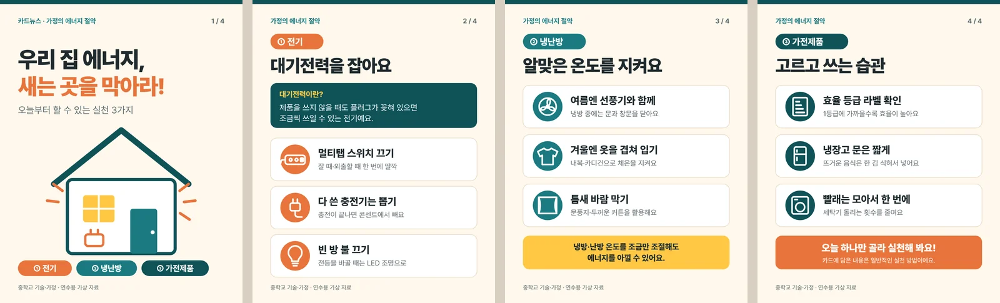
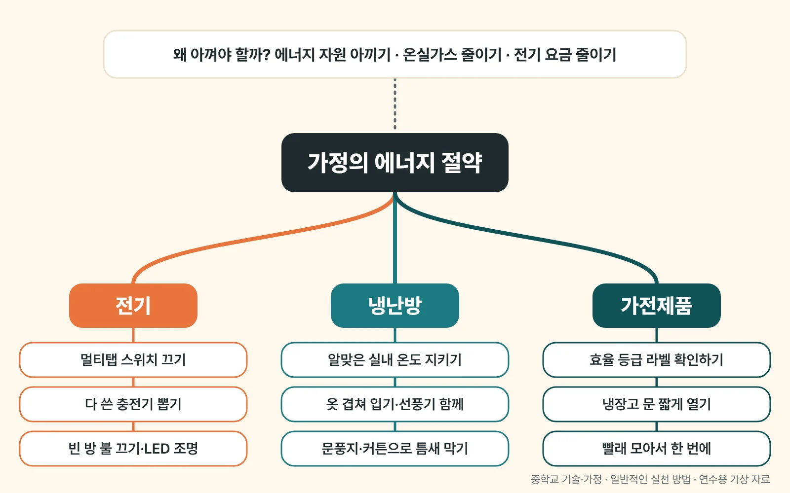

카드뉴스·개념 도식 만들기
수업 내용을 휴대폰으로도 읽히는 카드뉴스 4장과 한눈에 보는 개념 도식 1장으로 만들고, PNG 그림 파일로 저장합니다.
- 목표
- 같은 내용을 카드뉴스 4장(1080×1350)과 개념 도식 1장(1600×1000)으로 만들어 PNG로 저장한다 (예시: 중학교 기술·가정 «가정의 에너지 절약» — 전기·냉난방·가전제품 실천 방법)
- 준비물
클로드연수안에 만든 빈10차시폴더, 크롬이나 엣지 브라우저- 결과물
- ① 카드와 도식을 그린
index.html— 인터넷 없이 열리고 «PNG로 저장» 단추가 있음 ② 카드 PNG 4개 ③ 도식 PNG 1개 - 주의
- 통계 수치는 출처 없이 넣지 않기 · 인터넷 이미지·교과서 그림 쓰지 않기 · 학생 사진·이름 넣지 않기
카드뉴스와 도식은 디자인 프로그램으로 만들면 글자 하나 고칠 때마다 손이 많이 갑니다. Code 탭에 HTML(SVG)로 그리게 하고 PNG로 저장하면 문장만 바꿔 다시 저장하면 되고, 크기도 정확하게 맞습니다. 핵심은 둘입니다. 카드별 문장을 구성안으로 먼저 받는 것, 그리고 출처 없는 숫자는 넣지 않는 것입니다. 그럴듯한 «○○% 절약» 같은 숫자는 클로드가 지어낼 수 있습니다.
먼저 볼 영상

영상은 스킬로 카드뉴스를 만듭니다. 이 차시는 스킬 없이 프롬프트로 만들고, 스킬은 11·12차시에서 다룹니다.
1 준비
클로드연수안에 빈 폴더10차시를 만듭니다.- 카드에 꼭 넣고 싶은 숫자(통계)가 있다면, 교사가 확인한 자료와 출처를 메모(예:
자료.txt)로 같은 폴더에 넣습니다. 이 차시 예시는 숫자 없이 만듭니다.
2 따라 하기
번호 순서대로 진행합니다. 프롬프트가 필요한 단계에는 바로 아래에 복사 단추가 있습니다.
- 데스크톱 앱 사이드바 맨 위의 Code 탭을 누릅니다.
- 프롬프트 상자 아래 줄의 환경 단추에서 Local 묶음의 맨 위 항목(내 컴퓨터)을 고르고, 폴더 단추의 Open folder… 로
클로드연수/10차시를 고릅니다. - 같은 줄의 권한 모드 단추를 Plan 으로 바꿉니다.
- 구성안을 받습니다. 아래 프롬프트를 보내면 카드마다 들어갈 문장과 그림, 도식의 갈래를 보여 줍니다.
중학교 기술·가정 '가정의 에너지 절약' 수업에서 쓸 카드뉴스 4장과 개념 도식 1장을 만들려고 합니다. 먼저 구성안만 세워 주세요. 만들 것 - 카드뉴스 4장: 1장 표지 → 2장 전기(대기전력) → 3장 냉난방 → 4장 가전제품 고르고 쓰기 - 개념 도식 1장: 가운데 '가정의 에너지 절약'에서 세 갈래(전기·냉난방·가전제품)로 나뉘고, 갈래마다 실천 방법 3가지 요구 사항 - index.html 한 파일에 카드와 도식을 SVG로 그리기. 외부 라이브러리·글꼴·인터넷 없이 열려야 함 - 카드 크기 1080×1350, 도식 1600×1000 - 카드와 도식마다 'PNG로 저장' 단추: 누르면 브라우저 안에서 같은 크기의 PNG로 바꿔 내려받기. 파일 이름은 영어로 (예: energy-card-1.png) - 휴대폰 화면에서도 읽히는 큰 글씨, 카드 한 장에 실천 방법 3개까지 - 통계 수치(절약률, 요금, 퍼센트 등)는 넣지 말고 일반적인 실천 방법 위주로 - 교과서 그림이나 인터넷 이미지는 쓰지 말고 아이콘·도형을 직접 그리기 - 색만으로 구분하지 말고 번호나 글자도 함께 구성안은 표로 보여 주세요: 카드 번호 | 제목 | 카드에 들어갈 문장 | 그림(아이콘) | 색 도식은 가운데 낱말, 갈래 낱말, 잎 낱말을 목록으로 보여 주세요.
«통계 수치는 넣지 말고»가 이 차시의 핵심 문장입니다. 카드뉴스는 숫자가 있어야 그럴듯해 보여서, 적어 두지 않으면 출처 없는 퍼센트가 들어가기 쉽습니다. 숫자가 꼭 필요하면 교사가 확인한 자료 파일을 주고 «이 파일의 숫자만, 출처와 함께»라고 씁니다. «PNG로 저장 단추»를 처음부터 적어 두면 프로그램을 설치하지 않고 브라우저만으로 그림 파일을 얻습니다.
캡처 넣을 곳 · L10-1
Plan 모드의 구성안 (따라 하기 4번).- 카드별 표와 도식 목록이 보이게
- 빨간 상자: 구성안에 숫자가 들어간 곳이 없는지 확인하는 모습
- 구성안을 읽고 고칠 점은 말로 고칩니다. 예: «3번 카드 문장을 더 짧게», «도식의 잎 낱말을 카드 문장과 같게 맞춰 주세요». 구성안에 숫자가 있으면 «이 숫자의 출처가 무엇인가요?»라고 묻고, 출처가 없으면 빼게 합니다.
- 권한 모드를 Manual 로 바꾸고 아래 프롬프트로 만들기를 맡깁니다. 바뀔 내용과 승인 단추가 나오면 승인합니다.
구성안대로 만들어 주세요. 다 만들면 앱 안 브라우저 창에서 열어 직접 확인하고, 아래를 표로 알려 주세요. - 글자가 카드 밖으로 넘치거나 서로 겹치는 곳이 없는지 - 'PNG로 저장' 단추가 카드와 도식마다 있고, 저장 크기가 1080×1350(도식은 1600×1000)으로 맞게 설정됐는지 - 카드와 도식에 숫자가 들어간 곳이 있는지 (있으면 어디인지) 프로그램을 새로 설치해야 하는 방법은 쓰지 말아 주세요.
«프로그램을 새로 설치하지 말아 주세요»를 덧붙이는 까닭: 클로드가 PNG 파일을 폴더에 바로 만들려고 그림 변환 프로그램 설치를 물을 때가 있습니다. 학교 PC는 설치가 막혀 있는 경우가 많으니, 브라우저 단추로 저장하는 방법이 가장 확실합니다.
- 대화창에 나온
index.html경로를 누르면 앱 안 브라우저 창에서 카드와 도식을 볼 수 있습니다. 글자가 넘치거나 겹친 곳이 없는지 봅니다.캡처 넣을 곳 · L10-2
앱 안 브라우저 창 (따라 하기 7번).- 빨간 상자: 대화창의
index.html경로와 브라우저 창 - 번호 표시: ① 카드 4장 ② «PNG로 저장» 단추
- 빨간 상자: 대화창의
- 아래 프롬프트로 내용과 디자인을 검수하게 하고, 눈에 띈 점은 하나씩 고칩니다. 예: «2번 카드의 아이콘이 멀티탭처럼 안 보여요. 콘센트 구멍을 더 크게»
카드뉴스와 도식을 검수해 주세요. 1. 맞춤법·띄어쓰기 2. 교과서 용어와 다른 표현 (예: 대기전력, 에너지소비효율등급) 3. 사실과 다르거나 지나치게 단정한 문장 (확실하지 않으면 '확인 필요'로 표시) 4. 휴대폰 화면 크기로 줄였을 때 읽기 어려운 작은 글씨 5. 글자와 배경 색의 대비가 약한 곳 6. 카드 4장과 도식의 내용이 서로 맞는지 고친 곳은 «카드 번호 | 원래 → 고친 내용 | 까닭» 표로 알려 주세요.
- 파일 탐색기(맥은 Finder)에서
10차시/index.html을 더블클릭해 크롬이나 엣지로 열고, PNG로 저장 단추를 누릅니다. 여러 장을 한 번에 저장할 때 브라우저가 «여러 파일 다운로드»를 물으면 허용합니다. 저장된 파일은 다운로드 폴더에 있습니다.캡처 넣을 곳 · L10-3
다운로드 폴더 (따라 하기 9번).- 파일 탐색기에서
energy-card-1.png~energy-card-4.png,energy-diagram.png가 보이게 - 빨간 상자: 파일 속성의 «자세히»에 나온 크기 1080 × 1350
- 파일 탐색기에서
3 결과 예시


예시 카드뉴스·도식 직접 열어 보기 → · PNG 파일: 카드 1 · 2 · 3 · 4 · 도식
4 검증 포인트
② 사실 확인 — 대기전력 설명, 효율 등급처럼 교과 내용이 들어간 문장을 교과서와 대조합니다.
③ 휴대폰에서 읽히는지 — PNG를 휴대폰으로 보내 열어 보고, 가장 작은 글씨가 읽히는지 봅니다.
④ 크기 — 파일 탐색기에서 PNG 파일의 속성 → 자세히(맥은 정보 가져오기)에서 1080 × 1350 인지 봅니다.
⑤ 카드와 도식의 일치 — 같은 실천 방법이 같은 낱말로 쓰였는지 봅니다. 낱말이 다르면 학생이 다른 내용으로 오해합니다.
⑥ 색과 대비 — 색이 비슷한 학생도 구분할 수 있게 번호·글자가 함께 있는지, 연한 배경 위 연한 글자가 없는지 봅니다.
⑦ 저작권과 개인정보 — 인터넷 이미지, 교과서 그림, 학생 사진·이름이 들어가지 않았는지 봅니다.
5 다른 교과에 적용하기
따라 하기 4단계 프롬프트 대신 아래 교과 프롬프트를 씁니다. 교과마다 «다 만든 뒤 확인할 것»을 넣어 두었으니, 6단계와 8단계는 아래 공통 프롬프트로 바꿔 씁니다. 숫자가 필요한 사례는 교사가 확인한 자료 파일을 폴더에 함께 넣어 줍니다.
구성안대로 만들어 주세요. 다 만들면 앱 안 브라우저 창에서 열어 직접 확인하고, 글자 넘침·겹침, 'PNG로 저장' 단추와 저장 크기, 숫자가 들어간 곳, 그리고 구성안의 «다 만든 뒤 확인할 것»을 하나씩 점검한 결과를 표로 알려 주세요. 프로그램을 새로 설치해야 하는 방법은 쓰지 말아 주세요.
카드뉴스와 도식을 검수해 주세요. 1. 구성안의 «다 만든 뒤 확인할 것»을 다시 하나씩 점검 2. 맞춤법·띄어쓰기, 교과서 용어와 다른 표현 3. 출처 없는 숫자, 사실과 다르거나 지나치게 단정한 문장 (확실하지 않으면 '확인 필요') 4. 휴대폰 크기로 줄였을 때 읽기 어려운 글씨, 대비가 약한 색 5. 카드와 도식의 내용이 서로 맞는지 고친 곳은 «카드 번호 | 원래 → 고친 내용 | 까닭» 표로 알려 주세요.
국어높임 표현주체·객체·상대 높임을 카드 3장과 갈래 도식으로
중학교 국어 '높임 표현' 수업에서 쓸 카드뉴스 4장과 개념 도식 1장을 만들려고 합니다. 먼저 구성안만 세워 주세요. 만들 것 - 카드 4장: 표지 → 주체 높임(-시-) → 객체 높임(드리다·모시다·여쭈다·뵙다) → 상대 높임(종결 어미) - 개념 도식: 가운데 '높임 표현'에서 세 갈래, 갈래마다 뜻과 예문 하나 요구 사항 - index.html 한 파일에 SVG로 그리기, 외부 라이브러리·글꼴·인터넷 없이 - 카드 1080×1350, 도식 1600×1000, 카드와 도식마다 'PNG로 저장' 단추 (파일 이름은 영어로) - 휴대폰에서도 읽히는 큰 글씨, 카드 한 장에 예문 3개까지 - 예문은 새로 지은 문장만, 색만으로 구분하지 말고 번호도 함께 다 만든 뒤 확인할 것 - 예문마다 높임의 종류가 맞게 분류됐는지 - 용어가 교과서와 같은지 (주체 높임, 객체 높임, 상대 높임) 구성안은 표로 보여 주세요: 카드 번호 | 제목 | 카드에 들어갈 문장 | 그림 | 색
수학다각형의 내각의 합삼각형으로 나누기 그림 + 180° × (n − 2) 도식
중학교 수학 '다각형의 내각의 크기의 합' 수업에서 쓸 카드뉴스 4장과 개념 도식 1장을 만들려고 합니다. 먼저 구성안만 세워 주세요. 만들 것 - 카드 4장: 표지 → 사각형을 삼각형 2개로 나누기 → 오각형·육각형 나누기 → 규칙 180° × (n − 2) - 개념 도식: 삼각형·사각형·오각형·육각형의 나뉜 삼각형 수와 내각의 합을 한 줄로 이은 그림 요구 사항 - index.html 한 파일에 SVG로 그리기, 외부 라이브러리·글꼴·인터넷 없이 - 카드 1080×1350, 도식 1600×1000, 카드와 도식마다 'PNG로 저장' 단추 (파일 이름은 영어로) - 휴대폰에서도 읽히는 큰 글씨, 도형은 한 꼭짓점에서 대각선을 그어 나눈 모습 다 만든 뒤 확인할 것 - 내각의 합이 삼각형 180°, 사각형 360°, 오각형 540°, 육각형 720° 인지 다시 계산 - 그림 속 삼각형 수가 n − 2 와 맞는지 구성안은 표로 보여 주세요: 카드 번호 | 제목 | 카드에 들어갈 문장·식 | 그림 | 색
영어교실 영어 표현학생이 수업 중에 쓰는 표현 카드, 교실 벽에 붙이기
중학교 영어 수업에서 학생이 쓰는 '교실 영어 표현' 카드뉴스 4장과 개념 도식 1장을 만들려고 합니다. 먼저 구성안만 세워 주세요. 만들 것 - 카드 4장: 표지 → 도움 요청하기(Could you say that again? / How do you say ~ in English?) → 허락 구하기(May I go to the restroom? / Can I borrow a pencil?) → 활동 마칠 때(I'm done. / Can you check my answer?) - 개념 도식: 가운데 'Classroom English'에서 상황별 세 갈래, 갈래마다 표현 두세 개 요구 사항 - index.html 한 파일에 SVG로 그리기, 외부 라이브러리·글꼴·인터넷 없이 - 카드 1080×1350, 도식 1600×1000, 카드와 도식마다 'PNG로 저장' 단추 (파일 이름은 영어로) - 교실 벽에 붙여도 읽히는 큰 글씨, 영어 아래에 작은 한국어 뜻 - 영어 문장은 문법·대소문자·문장부호가 정확하게 다 만든 뒤 확인할 것 - 모든 영어 문장이 자연스럽고 정확한지 - 한국어 뜻이 영어와 맞는지 구성안은 표로 보여 주세요: 카드 번호 | 제목 | 카드에 들어갈 문장 | 그림 | 색
과학물의 순환증발·응결·강수를 화살표 순환 도식으로
중학교 과학 '물의 순환' 수업에서 쓸 카드뉴스 4장과 개념 도식 1장을 만들려고 합니다. 먼저 구성안만 세워 주세요. 만들 것 - 카드 4장: 표지 → 증발 → 응결(구름) → 강수와 지표·지하로 흐르는 물 - 개념 도식: 바다·구름·산·강을 잇는 화살표 순환 그림, 화살표마다 과정 이름 요구 사항 - index.html 한 파일에 SVG로 그리기, 외부 라이브러리·글꼴·인터넷 없이 - 카드 1080×1350, 도식 1600×1000, 카드와 도식마다 'PNG로 저장' 단추 (파일 이름은 영어로) - 휴대폰에서도 읽히는 큰 글씨 - 숫자(물의 양·비율)는 넣지 말기 다 만든 뒤 확인할 것 - 화살표 방향이 과정과 맞는지 (증발은 위로, 강수는 아래로) - 용어가 교과서와 같은지, 원동력(태양 에너지)을 맞게 설명했는지 구성안은 표로 보여 주세요: 카드 번호 | 제목 | 카드에 들어갈 문장 | 그림 | 색
사회합리적 선택과 기회비용학생 일상 사례로 편익·비용·기회비용 도식
중학교 사회 '합리적 선택과 기회비용' 수업에서 쓸 카드뉴스 4장과 개념 도식 1장을 만들려고 합니다. 먼저 구성안만 세워 주세요. 만들 것 - 카드 4장: 표지 → 희소성과 선택 → 편익과 비용 → 기회비용 (주말 오후를 어떻게 쓸까? 같은 학생 일상 사례) - 개념 도식: 선택지 3개 → 각각의 편익과 비용 → 포기한 것 가운데 가장 큰 가치 = 기회비용 요구 사항 - index.html 한 파일에 SVG로 그리기, 외부 라이브러리·글꼴·인터넷 없이 - 카드 1080×1350, 도식 1600×1000, 카드와 도식마다 'PNG로 저장' 단추 (파일 이름은 영어로) - 휴대폰에서도 읽히는 큰 글씨, 금액은 쉬운 가상 숫자로 두고 가상임을 표시 다 만든 뒤 확인할 것 - 기회비용의 뜻이 교과서와 같은지 (포기한 대안 가운데 가치가 가장 큰 것) - 사례 계산이 맞는지 구성안은 표로 보여 주세요: 카드 번호 | 제목 | 카드에 들어갈 문장 | 그림 | 색
역사임진왜란의 전개주요 전투를 연표 카드로, 연도는 첨부 연표 기준
중학교 역사 '임진왜란의 전개' 수업에서 쓸 카드뉴스 4장과 개념 도식 1장을 만들려고 합니다. 먼저 구성안만 세워 주세요. 만들 것 - 카드 4장: 표지 → 전쟁의 시작 → 수군과 의병의 활약 → 정유재란과 전쟁의 끝 - 개념 도식: 연도 순 가로 연표, 사건마다 한 줄 설명 요구 사항 - index.html 한 파일에 SVG로 그리기, 외부 라이브러리·글꼴·인터넷 없이 - 카드 1080×1350, 도식 1600×1000, 카드와 도식마다 'PNG로 저장' 단추 (파일 이름은 영어로) - 휴대폰에서도 읽히는 큰 글씨, 인물 초상·사진은 넣지 않기 - 사건과 연도는 첨부한 연표.txt 에 있는 것만 쓰고 지어내지 않기 다 만든 뒤 확인할 것 - 화면의 사건·연도가 첨부 연표와 같은지 - 연표의 순서가 연도 순서와 맞는지 구성안은 표로 보여 주세요: 카드 번호 | 제목 | 카드에 들어갈 문장 | 그림 | 색
도덕사이버 언어폭력 예방멈추기·돕기·알리기 + 신고 창구 117
중학교 도덕 '사이버 언어폭력 예방' 수업에서 쓸 카드뉴스 4장과 개념 도식 1장을 만들려고 합니다. 먼저 구성안만 세워 주세요. 만들 것 - 카드 4장: 표지 → 이런 것도 언어폭력이에요(단톡방 따돌림·뒷담화 등을 설명으로만) → 내가 할 수 있는 일(멈추기·돕기·알리기) → 도움받을 곳 - 개념 도식: 가운데 '사이버 언어폭력 예방'에서 피해·목격·가해 상황별 세 갈래와 할 일 요구 사항 - index.html 한 파일에 SVG로 그리기, 외부 라이브러리·글꼴·인터넷 없이 - 카드 1080×1350, 도식 1600×1000, 카드와 도식마다 'PNG로 저장' 단추 (파일 이름은 영어로) - 욕설이나 실제 가해 문장을 재연하지 말고 설명으로만 - 마지막 카드에 신고·상담 창구: 학교폭력 신고 117, 담임 선생님·상담 선생님 - 통계 수치는 넣지 말기 다 만든 뒤 확인할 것 - 피해 학생을 탓하는 표현이 없는지 - 신고 번호가 117 로 맞게 적혔는지 구성안은 표로 보여 주세요: 카드 번호 | 제목 | 카드에 들어갈 문장 | 그림 | 색
기술·가정식품 표시 읽기소비기한·원재료·알레르기 표시를 카드 3장으로
중학교 기술·가정 '식품 표시 읽고 고르기' 수업에서 쓸 카드뉴스 4장과 개념 도식 1장을 만들려고 합니다. 먼저 구성안만 세워 주세요. 만들 것 - 카드 4장: 표지 → 소비기한 확인 → 원재료와 알레르기 유발 성분 → 영양 정보 읽는 순서 - 개념 도식: 가운데 '식품 표시'에서 네 갈래(소비기한·원재료·알레르기·영양 정보), 갈래마다 확인할 점 요구 사항 - index.html 한 파일에 SVG로 그리기, 외부 라이브러리·글꼴·인터넷 없이 - 카드 1080×1350, 도식 1600×1000, 카드와 도식마다 'PNG로 저장' 단추 (파일 이름은 영어로) - 휴대폰에서도 읽히는 큰 글씨, 실제 상품 이름·상표는 쓰지 않기 - 영양 성분 기준치 같은 숫자는 넣지 말기 다 만든 뒤 확인할 것 - '유통기한'이 아니라 '소비기한'으로 썼는지 - 특정 음식을 나쁘다고 단정하는 표현이 없는지 구성안은 표로 보여 주세요: 카드 번호 | 제목 | 카드에 들어갈 문장 | 그림 | 색
정보스미싱 문자 구별하기의심 신호 3가지와 대처 순서, 가상 문자 예시
중학교 정보 '스미싱 문자 구별하기' 수업에서 쓸 카드뉴스 4장과 개념 도식 1장을 만들려고 합니다. 먼저 구성안만 세워 주세요. 만들 것 - 카드 4장: 표지 → 이런 문자는 의심하기(모르는 링크, 급하게 재촉, 개인정보 요구) → 받았을 때 할 일 → 이미 눌렀다면 - 개념 도식: 문자 받음 → 의심 신호 확인 → 할 일로 이어지는 순서도 요구 사항 - index.html 한 파일에 SVG로 그리기, 외부 라이브러리·글꼴·인터넷 없이 - 카드 1080×1350, 도식 1600×1000, 카드와 도식마다 'PNG로 저장' 단추 (파일 이름은 영어로) - 예시 문자는 가상으로, 실제 기관·회사 이름과 실제 주소(URL)는 쓰지 않기 - 통계 수치는 넣지 말기 다 만든 뒤 확인할 것 - 예시 문자에 진짜로 열리는 주소가 없는지 - 대처 순서가 순서도와 카드에서 같은지 구성안은 표로 보여 주세요: 카드 번호 | 제목 | 카드에 들어갈 문장 | 그림 | 색
음악음악의 요소리듬·가락·화음·셈여림·빠르기 개념 도식
중학교 음악 '음악의 요소' 수업에서 쓸 카드뉴스 4장과 개념 도식 1장을 만들려고 합니다. 먼저 구성안만 세워 주세요. 만들 것 - 카드 4장: 표지 → 리듬과 빠르기 → 가락과 화음 → 셈여림과 음색 - 개념 도식: 가운데 '음악의 요소'에서 다섯~여섯 갈래, 갈래마다 뜻 한 줄과 기호·용어 예 (예: 셈여림 p, f) 요구 사항 - index.html 한 파일에 SVG로 그리기, 외부 라이브러리·글꼴·인터넷 없이 - 카드 1080×1350, 도식 1600×1000, 카드와 도식마다 'PNG로 저장' 단추 (파일 이름은 영어로) - 휴대폰에서도 읽히는 큰 글씨, 악보 기호는 도형으로 직접 그리기 - 곡 제목이나 악보 일부를 옮겨 싣지 않기 다 만든 뒤 확인할 것 - 셈여림 기호와 뜻이 맞는지 (pp, p, mp, mf, f, ff) - 용어가 교과서와 같은지 구성안은 표로 보여 주세요: 카드 번호 | 제목 | 카드에 들어갈 문장 | 그림 | 색
미술색의 대비색상·명도·채도·보색 대비를 색 견본 카드로
중학교 미술 '색의 대비' 수업에서 쓸 카드뉴스 4장과 개념 도식 1장을 만들려고 합니다. 먼저 구성안만 세워 주세요. 만들 것 - 카드 4장: 표지 → 명도 대비 → 채도 대비 → 색상 대비와 보색 대비 - 개념 도식: 가운데 '색의 대비'에서 네 갈래, 갈래마다 같은 회색·같은 색이 배경에 따라 달라 보이는 견본 요구 사항 - index.html 한 파일에 SVG로 그리기, 외부 라이브러리·글꼴·인터넷 없이 - 카드 1080×1350, 도식 1600×1000, 카드와 도식마다 'PNG로 저장' 단추 (파일 이름은 영어로) - 견본의 가운데 색은 실제로 같은 색값을 쓰고, 그 색값을 작게 적기 - 작가 작품 이미지는 넣지 않기 다 만든 뒤 확인할 것 - 견본마다 가운데 색값이 정말 같은지 - 화면 색과 인쇄 색이 다를 수 있다는 안내가 있는지 구성안은 표로 보여 주세요: 카드 번호 | 제목 | 카드에 들어갈 문장 | 그림 | 색
체육발목을 삐었을 때응급 처치 순서를 카드로, 보건실 안내 포함
중학교 체육 '운동 중 발목을 삐었을 때 응급 처치' 카드뉴스 4장과 개념 도식 1장을 만들려고 합니다. 먼저 구성안만 세워 주세요. 만들 것 - 카드 4장: 표지 → 운동을 멈추고 쉬기 → 얼음찜질과 압박 → 다친 곳을 심장보다 높이 올리기 - 개념 도식: 다침 → 멈춤 → 처치 순서 → 보건실·병원으로 이어지는 순서도 요구 사항 - index.html 한 파일에 SVG로 그리기, 외부 라이브러리·글꼴·인터넷 없이 - 카드 1080×1350, 도식 1600×1000, 카드와 도식마다 'PNG로 저장' 단추 (파일 이름은 영어로) - 마지막에 '심하게 붓거나 아프면 바로 보건 선생님께' 안내, 의학적 진단을 대신하지 않는다는 문장 - 시간(분)·온도 같은 숫자는 넣지 말기 다 만든 뒤 확인할 것 - 처치 순서가 카드와 도식에서 같은지 - 얼음을 피부에 바로 대지 말라는 주의가 있는지 구성안은 표로 보여 주세요: 카드 번호 | 제목 | 카드에 들어갈 문장 | 그림 | 색
진로진로 탐색 4단계자기 이해 → 직업 정보 → 체험 → 계획
중학교 진로 '진로 탐색 4단계' 수업에서 쓸 카드뉴스 4장과 개념 도식 1장을 만들려고 합니다. 먼저 구성안만 세워 주세요. 만들 것 - 카드 4장: 표지 → 나를 알기(흥미·적성·가치관) → 직업 정보 찾기와 체험 → 나의 계획 세우기 - 개념 도식: 네 단계를 잇는 계단 모양, 단계마다 학생이 할 수 있는 활동 두 개 요구 사항 - index.html 한 파일에 SVG로 그리기, 외부 라이브러리·글꼴·인터넷 없이 - 카드 1080×1350, 도식 1600×1000, 카드와 도식마다 'PNG로 저장' 단추 (파일 이름은 영어로) - 휴대폰에서도 읽히는 큰 글씨, 성별 고정관념을 담은 그림·예시는 쓰지 않기 - 특정 웹사이트 이름은 교사가 확인한 것만 (모르면 빈칸) 다 만든 뒤 확인할 것 - 활동 예가 중학생이 실제로 할 수 있는 것인지 - 단계 이름이 카드와 도식에서 같은지 구성안은 표로 보여 주세요: 카드 번호 | 제목 | 카드에 들어갈 문장 | 그림 | 색
담임방학 생활 안내안전·건강·연락 방법 카드, 학급 단체방에 올리기
중학교 학급 '방학 생활 안내' 카드뉴스 4장과 개념 도식 1장을 만들려고 합니다. 먼저 구성안만 세워 주세요. 만들 것 - 카드 4장: 표지 → 안전(물놀이·교통·사이버) → 건강한 생활 습관 → 개학 날 준비물과 연락 방법 - 개념 도식: 가운데 '방학 생활'에서 세 갈래, 갈래마다 약속 세 가지 요구 사항 - index.html 한 파일에 SVG로 그리기, 외부 라이브러리·글꼴·인터넷 없이 - 카드 1080×1350, 도식 1600×1000, 카드와 도식마다 'PNG로 저장' 단추 (파일 이름은 영어로) - 날짜·준비물·연락 방법은 첨부한 방학안내.txt 에 있는 것만 쓰고 지어내지 않기 - 학생 이름·사진, 교사 개인 전화번호는 넣지 않기 다 만든 뒤 확인할 것 - 개학 날짜와 요일이 서로 맞는지, 첨부 파일과 같은지 - 개인 연락처가 카드에 없는지 구성안은 표로 보여 주세요: 카드 번호 | 제목 | 카드에 들어갈 문장 | 그림 | 색
카드뉴스·도식을 HTML(SVG)로 그리고 브라우저에서 PNG로 저장하면, 문장을 고쳐 다시 저장하기 쉽고 크기도 정확합니다. 구성안으로 카드별 문장을 먼저 보고, 출처 없는 숫자는 넣지 않게 처음부터 적어 둡니다. 같은 내용을 카드와 도식 두 가지로 만들 때는 같은 낱말을 쓰게 해야 학생이 헷갈리지 않습니다. 이렇게 매번 쓰는 요구 사항은 12차시에서 스킬로 묶어 둘 수 있습니다.
· «PNG로 저장»을 눌러도 아무 일이 없다 — 앱 안 브라우저 창에서는 내려받기가 되지 않을 수 있습니다. 파일 탐색기에서 더블클릭해 크롬·엣지로 엽니다.
· 카드 4장 중 1장만 저장된다 — 브라우저가 여러 파일 다운로드를 막았습니다. 주소창 오른쪽의 알림에서 허용하거나, 카드마다 단추를 따로 누릅니다.
· 저장한 PNG의 글꼴이 화면과 다르다 — PNG는 그 PC에 설치된 글꼴로 그려집니다. 다른 PC에서 저장하면 글꼴이 바뀌어 글이 넘칠 수 있으니, 저장한 PC에서 한 번 열어 봅니다.
· 클로드가 프로그램 설치를 물었다 — 학교 PC에서는 거절하고 «설치 없이 브라우저 단추로 저장하게 해 주세요»라고 요청합니다.
· 숫자가 들어갔다 — «이 숫자의 출처가 무엇인가요?»라고 묻습니다. 출처를 대지 못하거나 교사가 확인할 수 없으면 «숫자를 빼고 실천 방법으로 바꿔 주세요»라고 합니다.
더 보기

출처: Claude Code 문서 Desktop — Preview your app(대화창의 HTML 경로를 누르면 앱 안 브라우저 창에서 열림) (2026-11-11 확인)